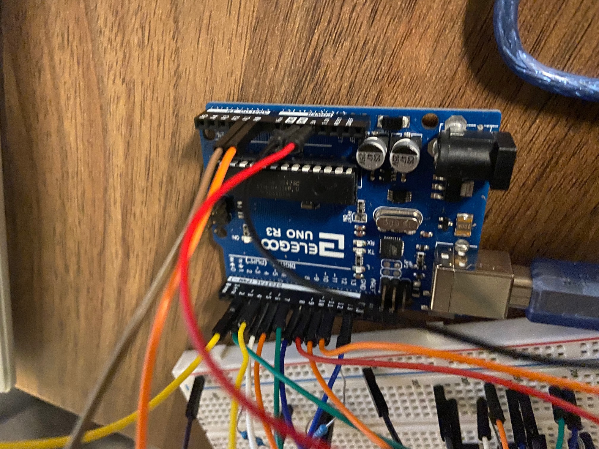

For the joystick, I wired through power and ground, and connected Vrx and Vry to analog read pins A0 and A1 respectively.
The joystick is basically two potentiometers, and will return different voltage readings depending on its position along x and y.
For the button, I wired between power, Pin 13, a 10kΩ resistor, and ground. I use digitalRead on Pin 13 to determine when power is HIGH and the button is being pressed.
The 10kΩ resistor gives a path for power to flow once the button is released and the circuit is broken.
For the red LED, I wired through Pin 2, a 220Ω resistor, and to ground. I chose 220Ω to ensure the red LED current was below the 20mA limit.
Red LEDs cause a 1.8V drop. I calculated the resistance to use based on Ohm's law (V = I*R).
(5 - 1.8)V = .02A * [x]Ω
3.2V / .02A = [x]Ω
x = 160
The calculated resistance is 160Ω for red LEDs. I chose to use 220Ω, because it was the next highest value of the resistors I had,
and a higher resistance would put the current a little bit lower than the limit.
For the buzzer, I made a simple circuit from Pin 11 through the buzzer to ground. I used an analog pin because I wanted to be able to use analogWrite to
control the buzzer volume.
Finally, for the 7-segment display I used Pins 3-10 (8 total), wired through 220Ω resistors to each part of the display (similar to current limits for the red LED). The display has a common ground pin.
Having different pins for each part of the display lets you control each segment to display different numbers.
A schematic of the circuit is shown above.
// joystick code draws from the lecture joystick example code
// 7-segment dispaly code draws from this Arduino Project Hub page https://create.arduino.cc/projecthub/stannano/one-digit-7-segment-led-display-70b1a0
// integers for joystick (pins + x and y value integer)
// x and y joystick read pins
int x = A0;
int y = A1;
int xval = 0;
int yval = 0;
// button press
bool button = false;
// lives variable to display
int lives = -1;
int testLives = -1;
//buzzer count to activate
int buzzCount = 0;
bool buzzActive = false;
// light count to activate
int lightCount = 0;
void setup() {
// start serial communication
Serial.begin(9600);
// buzzer
pinMode(11, OUTPUT);
int i;
// light
pinMode(2, OUTPUT);
// number display
for(i=3;i<=10;i++)
pinMode(i,OUTPUT);
}
void loop() {
// get xval and yval readings from joystick
// map from analogread() values to the dimensions of the screen (60 to 200 and 60 to 650)
xval = map(analogRead(x), 0, 1023, 60, 200);
yval = map(analogRead(y), 0, 1023, 60, 650);
// test for button press
button = digitalRead(13);
//print out x, y and button input from joystick in json readable format
Serial.print("[");
Serial.print(xval);
Serial.print(",");
Serial.print(yval);
Serial.print(",");
Serial.print(button);
Serial.println("]");
// check if lives (or a laser shoot) is sent over serial
if (Serial.available() > 0) { // if there's serial data
lives = Serial.read(); // read it
}
//display and update lives (test that it didn't get reset to 5 at game beginning or = 10 for a laser)
if (testLives != lives and lives != 5 and lives != 10){
// clear display to start, and also set a buzzer timer for when lives change
clearDisplay();
buzzCount = 10;
}
// display number for each lives count
if (lives == 5){
display5();
}
else if (lives == 4){
display4();
}
else if (lives == 3){
display3();
}
else if (lives == 2){
display2();
}
else if (lives == 1){
display1();
}
//if all lives lost
else if (lives == 0){
clearDisplay();
// when game is lost, test for first activation of losing buzzer and buzz to show the game is over
if (not buzzActive){
buzzCount = 20;
buzzActive = true;
}
}
// lives = 10 means a laser was shot
//serial code testing for laser shoot to activate light
else if (lives == 10){
// reset lives to testLives so lives still display correctly
lives = testLives;
lightCount = 15;
}
testLives = lives;
//buzz if buzzCount activated
if (buzzCount > 0){
buzzCount -= 1;
analogWrite(11,5);
}
// turn off at end of count
else if (buzzCount == 0){
analogWrite(11, 0);
if (lives != 0){
buzzActive = false;
}
}
// turn on light if lightCount activated
if (lightCount > 0){
lightCount -= 1;
digitalWrite(2, HIGH);
}
// turn off at end of count
else if (lightCount == 0){
digitalWrite(2, LOW);
}
// .01 sec delay
delay(10);
}
// pin nums for the 1 digit display
int a=6;
int b=5;
int c=4;
int d=10;
int e=9;
int f=7;
int g=8;
int dp=3;
//display number 1
void display1(void)
{
digitalWrite(b,HIGH);
digitalWrite(c,HIGH);
}
//display number2
void display2(void)
{
digitalWrite(a,HIGH);
digitalWrite(b,HIGH);
digitalWrite(g,HIGH);
digitalWrite(e,HIGH);
digitalWrite(d,HIGH);
}
// display number3
void display3(void)
{
digitalWrite(a,HIGH);
digitalWrite(b,HIGH);
digitalWrite(c,HIGH);
digitalWrite(d,HIGH);
digitalWrite(g,HIGH);
}
// display number4
void display4(void)
{
digitalWrite(f,HIGH);
digitalWrite(b,HIGH);
digitalWrite(g,HIGH);
digitalWrite(c,HIGH);
}
// display number5
void display5(void)
{
digitalWrite(a,HIGH);
digitalWrite(f,HIGH);
digitalWrite(g,HIGH);
digitalWrite(c,HIGH);
digitalWrite(d,HIGH);
}
// set display off
void clearDisplay(void)
{
digitalWrite(a,LOW);
digitalWrite(b,LOW);
digitalWrite(g,LOW);
digitalWrite(c,LOW);
digitalWrite(d,LOW);
digitalWrite(e,LOW);
digitalWrite(f,LOW);
}
var serial; // variable to hold an instance of the serialport library
var portName = 'COM3' //rename to the name of your port
var dataarray = []; //some data coming in over serial!
// color variable
var c = 'red';
//game record variables
var start = false;
var lives = 5;
// test if lives change
var testLives = 6;
var score = 0;
var adjustScore = 0;
var highScore = 0;
// laser array and index
var laserNum = 0;
var laser = [];
//enemy array and index
var count = 0;
var enemyNum = 0;
var enemy = [];
function setup() {
serial = new p5.SerialPort(); // make a new instance of the serialport library
serial.on('list', printList); // set a callback function for the serialport list event
serial.on('connected', serverConnected); // callback for connecting to the server
serial.on('open', portOpen); // callback for the port opening
serial.on('data', serialEvent); // callback for when new data arrives
serial.on('error', serialError); // callback for errors
serial.on('close', portClose); // callback for the port closing
serial.list(); // list the serial ports
serial.open(portName); // open a serial port
// make background
createCanvas(1500, 700);
background(0x08, 0x16, 0x40);
//enemy array of 20
for (var i = 0; i < 20; i++){
// bool = dead state and ints = x y position
enemy[i] = [true, 0, 0];
}
//laser array of 20
for (var i = 0; i < 20; i++){
// bool = dead state and ints = x y position
laser[i] = [true, 0, 0];
}
}
// get the list of ports:
function printList(portList) {
// portList is an array of serial port names
for (var i = 0; i < portList.length; i++) {
// Display the list the console:
print(i + " " + portList[i]);
}
}
// print serial port connections
function serverConnected() {
print('connected to server.');
}
function portOpen() {
print('the serial port opened.')
}
function serialError(err) {
print('Something went wrong with the serial port. ' + err);
}
function portClose() {
print('The serial port closed.');
}
//record if serial data is received
function serialEvent() {
if (serial.available()) {
var datastring = serial.readLine(); // readin some serial
var newarray;
try {
newarray = JSON.parse(datastring); // can we parse the serial
} catch(err) {
//console.log(err);
}
// set serial array to a variable
if (typeof(newarray) == 'object') {
dataarray = newarray;
}
console.log("got back " + datastring);
}
}
// function to check if r g b are typed to change color
function keyTyped() {
// test for r, set red and hex
if (key === 'r') {
c = 'red';
} else if (key === 'g') { // test for g, set green and hex
c = 'green';
} else if (key === 'b') { // test for b, set blue and hex
c = 'blue';
}
// send the updated color to serial monitor
}
function draw() {
// black background + white text
background(0);
fill(255);
// print out score, lives, and instructions to change color
textSize(20);
text("Lives: " + lives, 30, 30);
text("Score: " + adjustScore, 120, 30);
text("Press R G B keys to change ship color!", 270, 30);
// test for game start
if (start){
//send lives to arduino, if lives have changed
if (testLives != lives){
serial.write(lives);
}
testLives = lives;
//make lasers
makeLasers();
//make enemies
makeEnemy();
// test for asteroid laser collisions
testLaserCollision();
//test for asteroid ship collisions
testShipCollision();
//draw spaceship at position specified by joystick serial
//draw exhaust fire
fill(color("orange"));
ellipse(dataarray[0] - 30, dataarray[1], 50, 10);
// make spaceship chosen color and add triangle + circle shapes
fill(color(c));
triangle(dataarray[0] + 20, dataarray[1], dataarray[0] - 20, dataarray[1] -25, dataarray[0] - 20, dataarray[1] + 25);
triangle(dataarray[0] - 10, dataarray[1], dataarray[0] - 40, dataarray[1] -10, dataarray[0] - 40, dataarray[1] + 10);
fill(color(c));
ellipse(dataarray[0], dataarray[1], 60, 30);
fill(0);
ellipse(dataarray[0] + 5, dataarray[1], 10);
// adjustScore increases every 50th Score
if (score % 50 == 0){
adjustScore ++;
}
// score increases with time survived
score++;
//test for 0 lives, reset to Start
if (lives == 0){
start = false;
}
// if game end, reset all variables
if (start == false){
// reset enemy and laser arrays
for (var i = 0; i < 20; i++){
enemy[i] = [true, 0, 0];
laser[i] = [true, 0, 0];
}
// test for high score
if (adjustScore > highScore){
highScore = adjustScore;
}
// reset variables
lives = 5;
testLives = 6;
score = 0;
adjustScore = 0;
enemyNum = 0;
laserNum = 0;
serial.write(0);
}
}
else{
// at beginning, prompt for button press to start game
textSize(100);
fill(color('magenta'));
text("Asteroid Shoot", 350, 350);
fill(color(255));
textSize(32);
text("Press Button to Start", 350, 400);
// display high score
text("High Score: " + highScore, 350, 450);
// if serial array says buttonpress = true, restart game
if (dataarray[2] == 1){
start = true;
}
}
}
// make the enemy asteroids
function makeEnemy(){
// random y spawn position
var randY = Math.random() * (700 - 60) + 60;
// if enemy at index not created yet, set it to be created
if (enemy[enemyNum][0] == true){
enemy[enemyNum] = [false, 1550, randY];
}
// update created enemy positions and draw all created enemies
for (var i = 0; i < 20; i++){
if (enemy[i][0] == false){
// enemies move x pos - 10
enemy[i][1] -= 10;
// draw gray asteroids
fill(color("gray"));
ellipse(enemy[i][1], enemy[i][2], 40, 20);
}
}
// every 20th count, spawn a new enemy and update index
if (count%20 == 0){
enemyNum++;
// reset index and count at the end
if (enemyNum == 20){
count = 0;
enemyNum = 0;
}
}
// count updates each loop
count++;
// if enemy gets to x = 0 at the end of the screen, reset enemy to dead
for (var i = 0; i < 20; i++){
if (enemy[i][1] <= 0){
enemy[i][0] = true;
}
}
}
// make the spaceship lasers
function makeLasers(){
//test for button press and if lasers at index aren't created yet, set laser to be created
if (dataarray[2] == 1 && laser[laserNum][0] == true){
laser[laserNum] = [false, dataarray[0], dataarray[1]];
//if laser is created, send code 10 to serialport
serial.write(10);
}
// update created laser positions and draw all created lasers
for (var i = 0; i < 20; i++){
if (laser[i][0] == false){
// lasers move x pos + 10
laser[i][1] += 10;
// draw red rectangles for lasers
fill(color("red"));
rect(laser[i][1], laser[i][2], 10, 6);
}
}
// if the previous laser has reacehed position 500, the next laser can be created
if (laser[laserNum][1] >= 500){
laserNum++;
// reset index at end
if (laserNum == 20){
laserNum = 0;
}
}
// if lasers get to the end of the screen 1500, reset to dead
for (var i = 0; i < 20; i++){
if (laser[i][1] >= 1500){
laser[i][0] = true;
}
}
}
// test for laser asteroid collisions
function testLaserCollision(){
// for each laser (test if they've been created)
for (var i = 0; i < 20; i++){
if (!laser[i][0]){
// for each enemy (test if they've been created)
for (var j = 0; j < 20; j++){
if (!enemy[j][0]){
// test if same x position
if (laser[i][1] - 5 <= enemy[j][1] + 20 && laser[i][1] + 5 >= enemy[j][1] - 20){
// test if same y position
if (laser[i][2] - 3 <= enemy[j][2] + 10 && laser[i][2] + 3 >= enemy[j][2] - 10){
//set laser + enemy as dead
laser[i][0] = true;
enemy[j][0] = true;
// 100 points per enemy killed
adjustScore += 100;
}
}
}
}
}
}
}
// test for ship asteroid collisions
function testShipCollision(){
// for each enemy (test if they've been created)
for (var i = 0; i < 20; i++){
if (!enemy[i][0]){
// test if same x position
if (dataarray[0] - 30 <= enemy[i][1] + 20 && dataarray[0] + 30 >= enemy[i][1] - 20){
// test if same y position
if (dataarray[1] - 15 <= enemy[i][2] + 10 && dataarray[1] + 15 >= enemy[i][2] - 10){
//set enemy as dead
enemy[i][0] = true;
// lose a life
lives -= 1;
}
}
}
}
}
The function of the circuit and code is shown in the following Demo Video. My video includes some more documentation of the implementation at the beginning, and then clips of me playing the game.